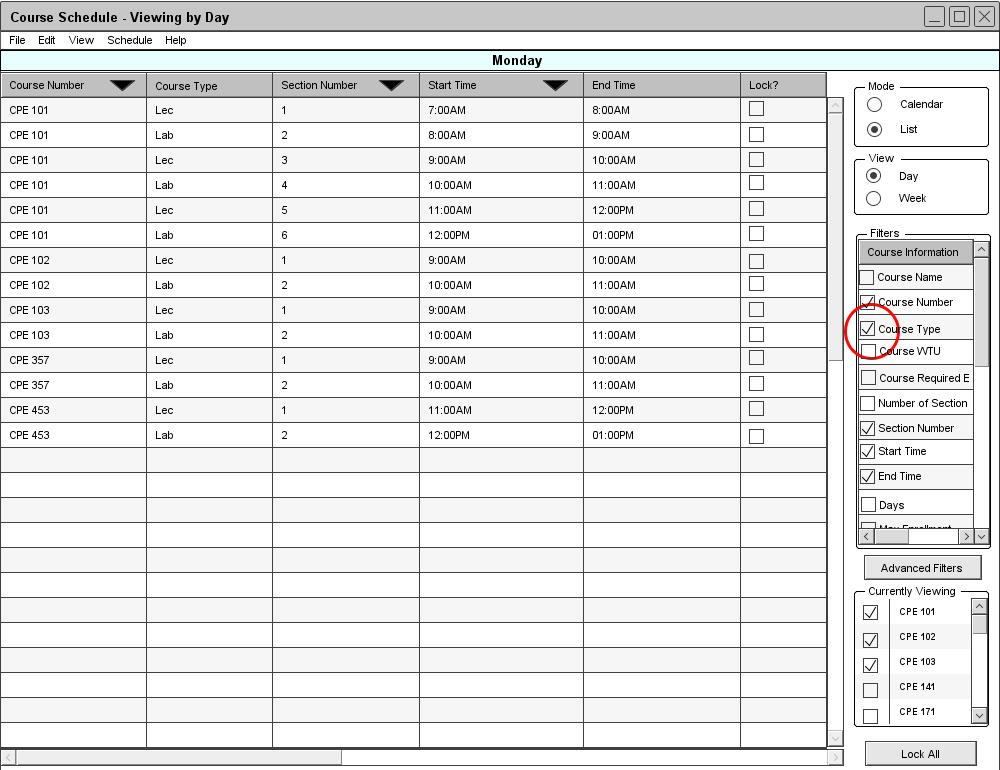

Figure 70: List Mode of Daily Course Schedule
In a course schedule view, the Scheduler Tool displays a schedule view for the selected courses from the course viewing options dialog shown in figure 66. There are two levels of details for viewing a course schedule:
While viewing a schedule, users can add or remove the current filter information in the view by checking or unchecking checkboxes on the right column. Figure 70 is an example of a course schedule view with Course Number, Section Number, Start Time and End Time fields displayed. The view is currently sorted by course number, section number, and then start time, ascendingly. See section 2.5.4. Sorting the List View for more information about sorting.
Figure 70: List Mode of Daily Course Schedule
After the user checks the checkbox for Course Type, the Scheduler Tool generates another column between Course Number and Section Number to display Course Type information, as shown in figure 71.

Figure 71: Additional Filter Option in The List Mode